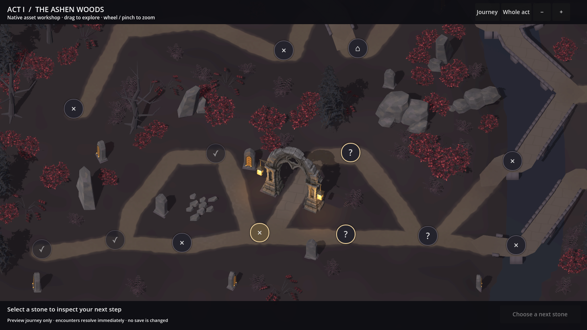
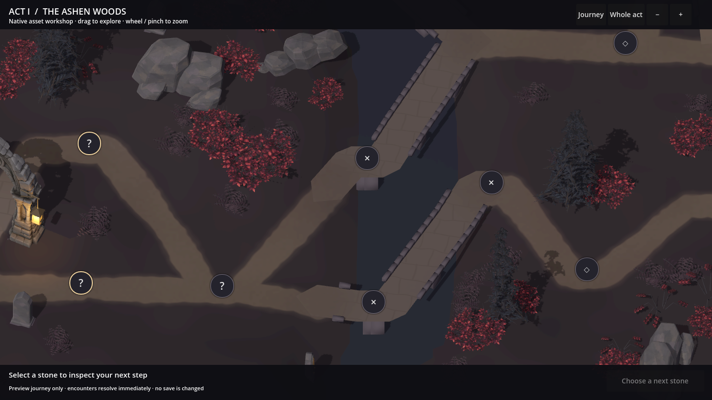
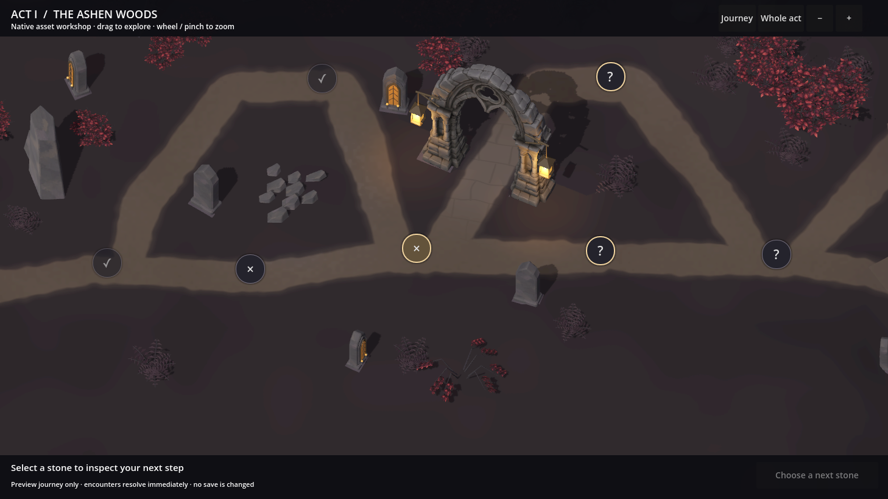
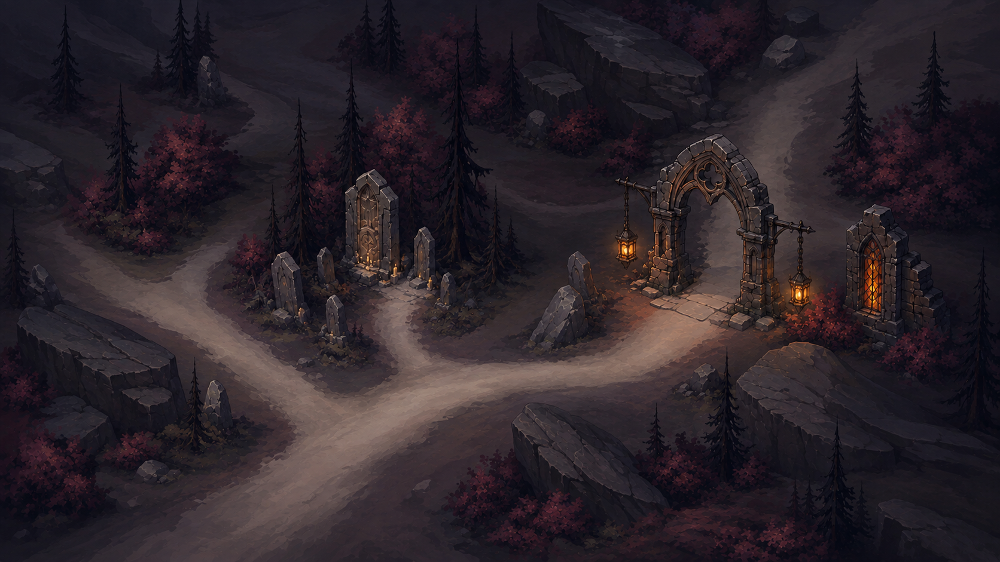
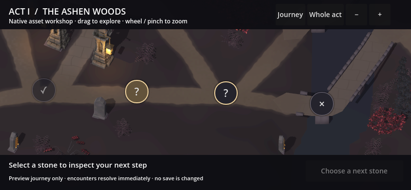
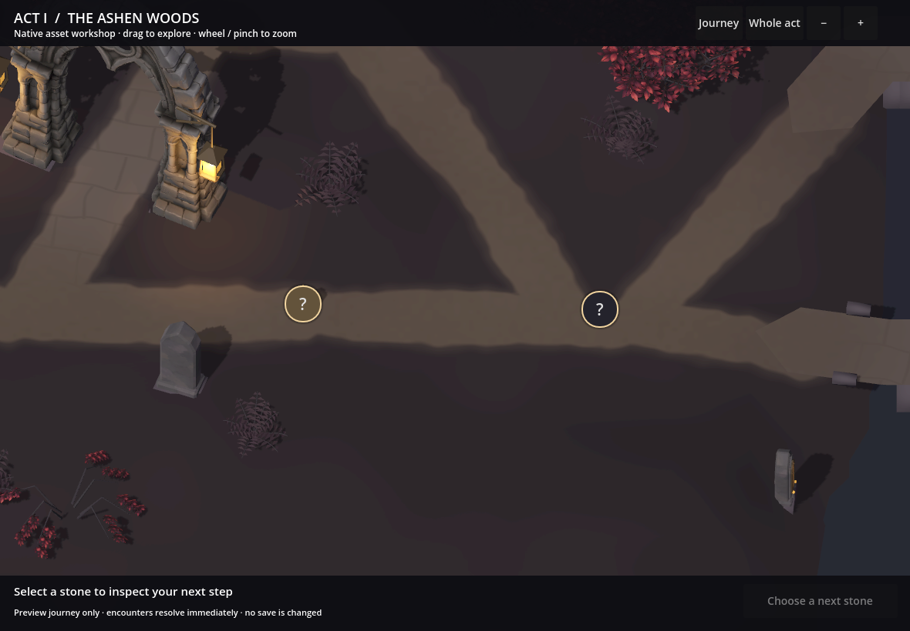
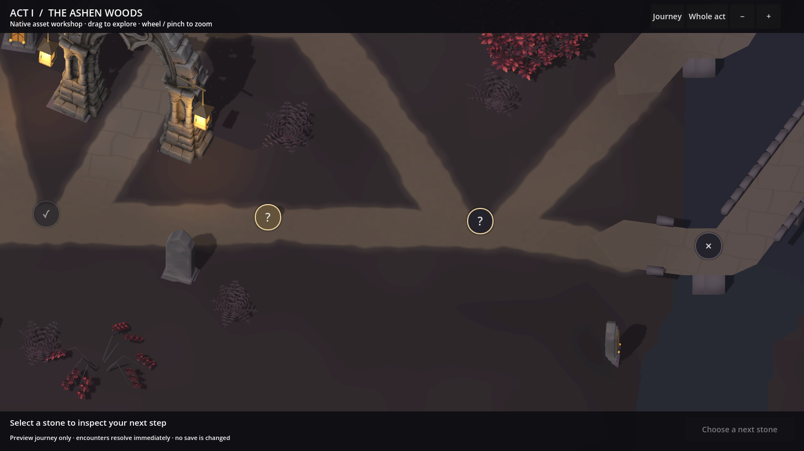

A woodland that joins together.
The woodland now uses twelve natural scenery models. Wind-bent and bare trees, trailing thorns, ferns, split stones and loose scree join the previous six forms. The gateway retains its accepted scale.
The comparison below uses the same native camera framing. Road colours now share a consistent palette. Dirt, leaf litter, gravel, exposed slate, worn paving and damp bridge approaches blend according to the surrounding scenery.
Same viewpoint. Twelve woodland forms.
Undergrowth gathers around trees and rock formations. Tall, narrow silhouettes alternate with broader crowns, while low shrubs and rock ridges fill the ground layer. Open areas remain between groups.

Review focus: whether the different silhouettes and plant groups feel more natural, and whether the road treatments belong to the landscape.
Roads, junctions and bridge approaches
The overly pale patches from Review 03 have been removed. Woodland litter and mineral wear follow nearby plants and rocks. At bridge approaches, dirt runs over the first stones; bridge surfaces are joined before rendering to close the small triangular gaps at bends.


Review focus: whether these surfaces now feel connected, and whether the road edges have enough definition without looking pasted onto the ground.
Twelve forms, in two groups
These unretouched Godot turntables share the 55° camera and scene lighting. The first group shows the six new forms; the second retains the previous six for comparison.
The accepted language and its asset translation
{kind=link}

{kind=link}
A passage on the generated route
The gateway follows a real compiled centreline. Its stone piers sit beside the road, with a memorial, rock bank and trees arranged nearby. All 65 nodes and 76 connections remain in the sample.
The route connections and node positions remain unchanged. Road bends are softened within the original corridor; this is still the same generated layout. Fuller land relief, detailed bridge assembly and integrated waystones remain part of the complete section production.
What happens after this review
The gateway and original models retain their previous acceptance. This page adds six further forms and revises the road and bridge connections. After this placement discussion, Step 4 continues assembling the finished playable section: terrain relief, banks, road wear, grounded bridges, deliberate vegetation groups, lighting and waystones. Step 5 checks the complete scene against the approved concept before expansion to varied layouts and the other acts.
Reference-shape and grounding checks
Native desktop renders at three reference dimensions pass drag, wheel zoom, node selection and legal preview travel. These captures show the resulting frame after the input exercise. They are desktop viewport checks; physical-device performance remains for later qualification.
{kind=link}

{kind=link}

{kind=link}

Contact heights were compared with 200 physics rays against the actual terrain mesh. The maximum difference is below 0.001 world units. Additional mesh probes confirm clearance across the gateway's route passage. The rebuilt bridge decks also pass 1,659 centre and shoulder ray probes. These checks cover the current generated sample; broader layout qualification remains ahead.